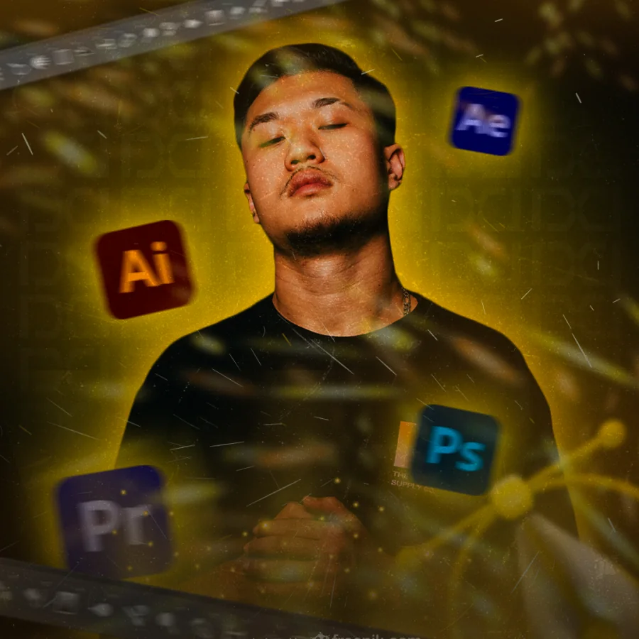

A Prattes Design nasceu com um propósito claro: transformar marcas comuns em marcas memoráveis. Mais do que um estúdio de design, somos um parceiro estratégico de donos de empresas que querem comunicar melhor, vender com mais clareza e construir uma presença visual forte — no físico e no digital.
Unimos três frentes que poucos estúdios entregam com profundidade sob o mesmo teto: design e branding, web design e audiovisual. Cada projeto começa por diagnóstico e estratégia, passa por uma execução criativa com método e termina em entregas que geram percepção de valor e resultado real para o negócio.
Ao longo da nossa trajetória, construímos cases para marcas de segmentos muito diferentes — da identidade visual da Ótica Marília e da marca corporativa da Kraken Growth Marketing, ao branding afetivo da Confeitaria Laço Rosa, à comunicação tech da CYEX em odontologia digital, à identidade da Ahau Solar em energia solar, às artes de tráfego pago do consórcio Winner · Porto Seguro, à cobertura de alta joalheria da MYNE e ao registro dos eventos da GAP Group pelo Brasil.
Em todos eles, o fio condutor é o mesmo: design que não serve só para chamar atenção, mas para resolver problemas, comunicar com clareza e fortalecer o posicionamento da marca. É assim que ajudamos empresas a parecerem — e a serem — mais profissionais.

Marcel Sarang é designer gráfico e diretor de arte da Prattes Design, unindo visão estética, pensamento estratégico e execução criativa para transformar ideias em projetos visuais funcionais e memoráveis.
Com experiência em design gráfico, direção de arte, criação de campanhas digitais, identidade visual, embalagens, conteúdos para redes sociais, motion graphics e captação audiovisual, Marcel traz para a Prattes Design um olhar criativo, técnico e versátil.
Ao longo de sua trajetória, atuou no desenvolvimento de peças gráficas para marcas e clientes, criação de linhas editoriais, campanhas de endomarketing, e-mail marketing, cobertura de eventos e produção de conteúdos digitais. Sua experiência passa por diferentes frentes do design, sempre com foco em construir soluções visuais que sejam bonitas, estratégicas e, acima de tudo, eficientes.
Marcel acredita que o bom design não é apenas aquilo que chama atenção, mas aquilo que comunica com clareza, resolve problemas e cumpre seu objetivo com excelência. Seu trabalho combina criatividade, responsabilidade, senso estético, visão funcional e paixão por projetos desafiadores, inovadores e bem executados.
Vinícius Prattes é designer gráfico e fundador da Prattes Design, com experiência em criação visual, marketing digital, audiovisual, motion design, web design, SEO, fotografia e campanhas para marcas que buscam se posicionar com mais impacto e profissionalismo.
Com uma trajetória construída entre produção gráfica, design digital, campanhas institucionais, social media, audiovisual e marketing, Vinícius une criatividade, técnica e estratégia para transformar ideias em soluções visuais completas.
Ao longo de sua experiência, atuou em projetos de criação de peças gráficas, campanhas comerciais e institucionais, key visuals, materiais para redes sociais, folders, e-books, panfletos, carrosséis, manuais de marca, anúncios, e-mails marketing, motion design, fotografia, captação e edição de vídeos.
Sua vivência passa por diferentes áreas do design, desde a preparação técnica de arquivos para impressão, tratamento de imagens, vetorização e correção de cores, até a criação de campanhas digitais, análise de métricas, estudo de concorrentes, tendências de mercado, branding, identidade visual e planejamento mensal de conteúdos.
Na Prattes Design, Vinícius traz uma visão estratégica voltada para marcas que precisam comunicar melhor, vender com mais clareza e construir uma presença visual mais forte. Seu trabalho combina design, marketing, estética e performance para entregar projetos que não apenas chamam atenção, mas que geram percepção de valor e fortalecem o posicionamento da marca.